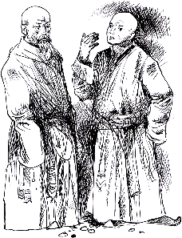
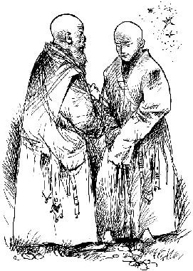
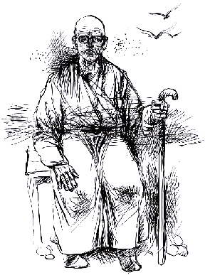

(Nyams-myong rgan-po'i 'bel-gtam yid-'byung dmar-khrid)
Geshe Ngawang Dhargyey
written from notes taken by Alexander Berzin
from the oral translation by Sharpa Rinpoche
Dharamsala, India, September 5 - 12, 1975
This is the printer-friendly version of: www.berzinarchives.com/web/en/archives/sutra/level1_getting_started/general_introductory_material/paraphrase_old_man_dhargye.html
[The paraphrase of the text is in black script. Geshe Dhargyey's comments are in violet between square brackets.]
[These teachings on suffering are from Advice of an Experienced Old Man by the precious master Gungtang Rinpoche (Gung-thang-bzang dKon-mchog bstan-pa'i sgron-me) (1762 - 1823). Containing many parables, they flow as a story in verse form, based on scripture. The main point of the teaching is to help us to develop renunciation and the determination to be free, and in general to lay the ground for bodhichitta to attain enlightenment for everyone's benefit.]
Homage to the untainted Buddha who has abandoned the seeds of rebirth uncontrollably recurring from the force of karma and disturbing emotions and who, consequently, does not experience the sufferings of old age, sickness, and death.

"Hey old man, why do you act, look, and speak differently from others?"
To that, the old man replies, "If you say I act, walk, move, and speak differently, do not feel you are flying in the sky above. Land back down on the same earth as me and listen to my words."
[Some youth feel that old age is only for the aged and that it will never come to them. They are very arrogant and have no patience to have anything to do with old people.]
The old man continues, "A few years ago, I was much stronger, more handsome, and more vigorous than you. I was not born the way I am now. If I ran, I could even catch up with flying horses.
[ Most old people speak like this. The present is never as good as the old days were.]
"If I caught something, I could even catch bare-handedly yaks of the nomad lands. My body was so flexible, I could move like a bird in the sky. My body was so fit, I looked like a youthful god. I wore the brightest colored clothes and loads of ornaments of gold and silver, ate tons of delicious food and sweets, and rode mighty steeds. I hardly ever sat alone without playing, laughing, and enjoying myself. Hardly any happiness exis ts that I have not experienced.
"At that time, I never thought of the impermanence of my life or about my death. Nor did I expect to go through the suffering of old age as I am now."
[Once there was a young person the region where I lived, who led a luxurious life and always indulged in pleasures. Slowly he became old, his body bent, his income decreased. He said to his friends, "I never thought old age would come so suddenly."]
"Living with the distraction of involvement with friends, parties, and having a good time, old age sneaks up and overcomes you in the midst of the sound of your laughter."
[Geshe Kamapa said, "We should be grateful that old age comes slowly. If it came all at once, it would be unbearable. If at thirty years old we went to sleep and woke up looking eighty, we could not bear seeing ourselves. We do not comprehend our own old age. How we grew old is a total mystery to us. When all of a sudden we realize our old age, it takes a while to accept it. Then it is too late. Although it is said that the practice of Dharma for a few hours before death is helpful, to engage in tantra we need a physically fit body. Therefore, it is important to start tantric practice while still young.]
"When we become very old, we dislike our own selves when we look in a mirror. At that time, our bodies and minds become weak. Our bodies begin to degenerate from head to toe. Our heads are bent as if always receiving a vase initiation.
"The white hair on my head, with no black left, it is not a sign of purification. It is the arrow of frost from the mouth of the Lord of Death, which has landed on my head. The lines on my forehead are not the creases on a pudgy infant drinking milk from his mother. It is the count by messengers of the Lord of Death of how many years I have already lived. When I squint, it is not because smoke is in my eyes. It is a sign of being helpless with the degeneration of my sensory powers. When I try to make a big effort to hear with my hand by my ear, it is not because I am making a secret communication. It is a sign of the degeneration of my hearing.
"When I dribble and snot comes from my nose, it is not a pearl adornment on my face. It is a sign of the thawing of the ice of youthful vigor by the sunshine of old age. Loosing my teeth is not a sign of cutting a new set like a young child. It is a sign of the wearing out of the tools of eating which the Lord of Death is putting away. When much saliva comes out and I spit when I talk, it is not like sprinkling water on the earth to clean it. It is a sign of an end of all the words I shall say. When I speak incoherently and stumble over words, it is not that I am speaking a strange foreign language. It is a sign of my tongue being tired with a lifetime of idle chatter.
"When my appearance becomes ugly, it is not that I am trying to hide behind the mask of a monkey. It is a sign of the total degeneration of the body that I have borrowed. When my head shakes a lot, it is not that I am disagreeing with you. It is a sign of the overwhelming power of the stick of the Lord of Death that has hit my head. When I walk bent over, it is not that I am trying to find a needle I have lost. It is a clear indication of the degeneration of the element of earth in my body.
"When I get up rising on my hands and knees, I am not imitating a four- legged animal. It is because the support of my feet is no longer sufficient. When I sit down, it is like dropping a bag of something. It is not that I am angry with my friends. It is the loss of control of my body.
When I walk slowly, I am not trying to walk like a great statesman. It is because I have lost the complete sense of balance in my body. When my hands shake, it is not that I am waving my hands out of greed to get something. It is a sign of the fear of everything being taken away from me by the Lord of Death. When I can eat and drink only a little, it is not because I am miserly or stingy. It is a sign of the degeneration of the digestive heat at my navel. When I wear light clothes, it is not an attempt to imitate athletes. It is because the weakness of my body makes any clothes a burden to wear.
"When breathing is difficult and I get out of breath, it is not that I am healing someone by blowing a mantra. It is a sign of weakness and exhaustion of the energies in my body. When I do very little and have few activities, it is not from intentionally controlling my activities. It is because of the limit of what an old man can do. When I am very forgetful, it is not because I think others unimportant and look down on them. It is a sign of the degeneration of the consciousness of my memory.
"O young man, do not tease and make fun of me. What I experience now is not exclusive to me. Everyone experiences this. You wait and see; in three years, the first few messengers of old age will come to you. You will not believe or like what I say, but you will learn from experience. In this time of the five degenerations, you will be lucky to live to be as old as I am. Even if you live as long as I have, you will not be able to speak as much as I can."
The young man replies, "Instead of being able to live as long as you and become as ugly and ignored as you are and put in the ranks of dogs, it is better to die."
The old man laughs. "Young man, you are very ignorant and stupid to wish to live long and be happy, but not to have old age. Death may sound simple, but it is not that easy. To be able to die peacefully and happily, you need to be someone who has not accepted wrongly obtained offerings or broken the morality of the ten positive actions, and who has accumulated much listening to the Dharma, contemplation, and meditation. Then death is simple.
"I do not feel this way, however. I have no confidence of my having done anything constructive. I am afraid of death and am grateful for each day I can stay alive. My strong wish is to stay alive each day."
The young man changes his mind and says, "Old man, everything you say is true. What others have told me about the suffering of old age agrees with what I have seen in you. Your demonstration of old age to me has been very beneficial to my mind. I am amazed at the suffering of old age. O wise old man, if you have heard of any methods to escape old age, do not keep them a secret; share them with me and tell me the truth."

The old man pleasingly says, "There definitely is a method. If you know it, it is easy to follow. With little effort, we can quickly be liberated from this suffering. Although everyone who is born dies, very few die after growing old. Many die young without having the opportunity to reach old age. The methods are in Buddha's teachings. They contain many methods to gain liberation and enlightenment, in other words not to be reborn, get old, sicken, or die; but we have not practiced them."
[Once in a monastery house there was a self-made lama. He was a junior member in the monastery, and most of the monks did not pay attention to him. They had a meeting to discuss the future of the house. He said to prepare ropes and sheets to bind corpses. Everyone said this was a bad omen and got angry with him. They then discussed what everyone should do to help the monastery. He said to meditate on impermanence. In saying this, he gave them a great teaching. Many later Dalai Lamas have praised him. To prepare for the future, one needs to prepare for death.]
"Everyone wants immortality and the methods to attain it. But to be born and not to die is impossible. Even thousands of Fully Enlightened Beings, including Sakyamuni Buddha, have passed away. And as for the bodhisattvas and great gurus of the past, only their names remain. The same is evident in the history of the world. All great historical figures have died and only ruins are left. Thus, we must not forget the reality of our impending deaths. Even the great gurus of the present will pass away. Babies born today will all be dead in a hundred years. So how can you, young man, expect that you alone will live forever? Therefore, it is advisable to prepare yourself spiritually for death.
"A long lifespan cannot be bought with money or gained through physical comfort. If you have spiritual confidence and know what you want out of life, then the older you grow physically, the more happiness and youth of mind you will have. If you enjoy great physical comfort but have led an empty life, then the older you grow, the unhappier you become. You have to travel as a tourist to distract your mind from worrying about death. On the other hand, even if you have just a little spiritual confidence, the closer you approach death, the more you feel like a son returning to a happy home. You are not repelled by death, but look forward to continuing lives of happiness."
[Once a great spiritual master said, "Because I have complete confidence in my future births; I have no worry. Death can come at any time, and I welcome it."]
"Since the suffering of death is inevitable, we must do something about it. We cannot just sit and be depressed. As humans we have the wisdom to try many methods. Even Buddha cannot give you more explicit teachings, young man. I have spoken from my heart. Although this is my true heartfelt advice, do not rely only on my words alone; analyze them for yourself. Do practices concerning impermanence on your own. There is a proverb, 'Ask for the opinions of others, but make the decision yourself.' If you let many make decisions for you, many will give you different advice."
The young man says, "All you say is very true and beneficial. But, for the next few years I cannot do these things. I have other work to do. I have a large estate, wealth, and so on. I must do much business and tend to my property. After a few years I must meet you again, and then I shall do the practices."
The old man becomes very unhappy and says, "Everything you have told me now turns out to be empty words and meaningless. I have had the same thing, the wish to do something meaningful after a few years; but I never did anything and now have grown old. I know how vain what you say is. Things to do in a few years time will never end. You will always put them off. Things to do in a few years time are like an old man's beard; if you shave today, you will grow more tomorrow. After procrastinating until tomorrow and tomorrow, soon you will find your life is over. This procrastination of Dharma practice has fooled everyone. I have no confidence in you that you will ever practice Dharma. Therefore, it is a total waste for us to talk. Go back to your home and do whatever you want, and let me say some manis (mantras)."
The young man becomes very surprised and feels a bit hurt. He says, "How can you even think of saying such things to me? Tell me, how quickly can material things be accomplished in this life?"
The old man laughs, "You ask me these questions, so I guess I have to answer how long it takes to accomplish anything. In the southern direction lives the Lord of Death who cares not at all whether you have finished your work or not. He does whatever he wants. If you can have friendly relations with him and get his permission to accomplish something in life, then you can relax. Otherwise, you can never relax. People die in the middle of a cup of tea, while food is on the table, while walking, before they can finish taking a whiff of snuff.
"This happens to everyone, even great masters. Many of their teachings are incomplete, because they died before they finished writing them. So when the Lord of Death comes, you cannot say, 'I have a big estate and much work to do.' You cannot boast of anything to him; you have to leave everything. In this respect we are completely powerless. We cannot determine out lifespan. Therefore, if you are able to do anything, start practicing now. That will be meaningful; otherwise, your estates alone are meaningless. But nowadays there are few people who tell the truth about what will benefit you. What is even more rare is someone who will listen to sincere advice."
The youth is deeply moved and, having built up great respect for the old man, takes a few steps back and prostrates to him. He says, "No other lamas surrounded by golden banners, Geshes, or yogis have more profound teachings that what you have said. You have the appearance of an ordinary old man, but you are actually a great spiritual friend. I give my word of honor to practice all you have said, to the best of my ability, and in the future, please give me more teachings."
The old man agrees and accepts. He says, "I do not know much, but I have experienced a great deal. I can teach you from that. The most difficult thing is to make a beginning and establish yourself in the Dharma. To begin practicing Dharma after you are already old is more difficult. Therefore, it is important to start at a young age."
"When young, your memory is fresh; you have dynamic intelligence and the physical strength to build up positive force by prostrations. In terms of tantra, the strength and vigor of your energy channels are very good when young. If at a young age, you can break through the barrier of greed and attachment to material possessions and involve yourself in spiritual activities, it is very valuable. Once you have accepted the Dharma, understood its essential points, and gotten into its spirit, then everything you do, say, and think will be Dharma."
[Milarepa and Ra Lotsawa said the same, "When I eat, walk, sit, or sleep - it is Dharma practice."]
"There are no rigid rules in Dharma. So, try not to have too many thoughts or a fickle mind. Start now and keep up your interest in Dharma. Do not change your mind every minute. From this moment on, dedicate your life - body, speech, and mind - to Dharma practice."
Now the old man tells the youth what Dharma entails, "First, find a well-qualified spiritual mentor and devote yourself properly to him with your thoughts and actions. How much you can benefit others depends on finding a proper spiritual mentor and on your wholehearted committed relationship with him."
[Atisha emphasized this point. He often related that he had an equally wholehearted commitment to all 155 of his gurus.]
"Then, you need to observe your words of honor and vows to practice the ten constructive actions. Safeguard them as you would your eyes. Cut off your attachment to this life, like a wild elephant breaking a chain. Then accumulate listening, contemplation, and meditation, and do the three together. Support this all with the seven- limbed practice. This is way to build up positive force, to accumulate merit. Having done this, Buddhahood is at your fingertips."
[The Fifth Dalai Lama said that if a qualified mentor guides a qualified disciple, Buddhahood can be shaped in one's own hands. Milarepa also said that if you have a qualified mentor and a qualified disciple practicing his qualified teachings, then Buddhahood is not outside you; it is within. One must always stress, however, that the guru must be properly qualified.]
"This is happiness; this is joy. O dear son, if you practice in this way all your wishes will be fulfilled."
[These teachings are very beneficial for taming the mind. They soften a tough mind. A proverb says, "Do not be like a leather bag for containing butter. Do not be like a pebble in a stream." A leather bag does not become soft no matter how much butter is inside. No matter how long a stone stays in a stream, it too does not become soft.]
From that day on, the young man practiced pure Dharma unmixed with the eight worldly, childish feelings.
[We need to try to do the same. The more teachings we have heard, the more we need to practice and cultivate ourselves through them, and not be like pebbles in a stream that never get soft.]
The old man says, "I have heard these teachings from my spiritual mentors and they are also based on my own experience. May this benefit limitless sentient beings for the sake of their happiness."

The author ends: Although I have practiced little and lack Dharma experience, yet because of the diversity of sentient beings' dispositions, maybe these teachings will be of benefit to some. With the hope of benefiting the minds of limited beings, I have written this with sincerity and pure motivation. These teachings on impermanence are not just an interesting story I thought up to tell, but are based on The Four Hundred Stanzas by Aryadeva.